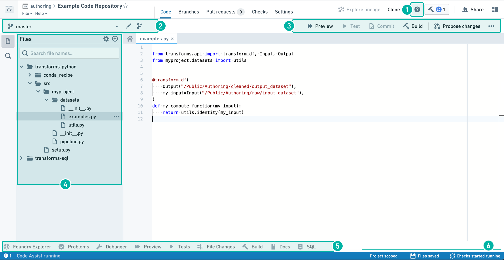
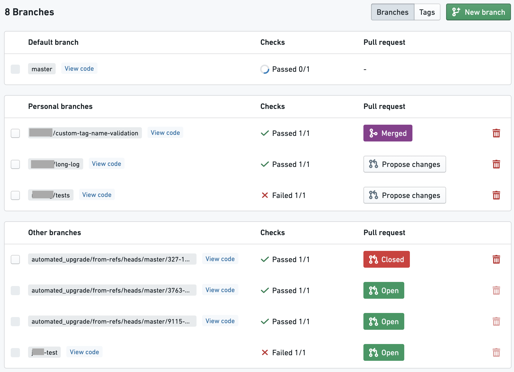
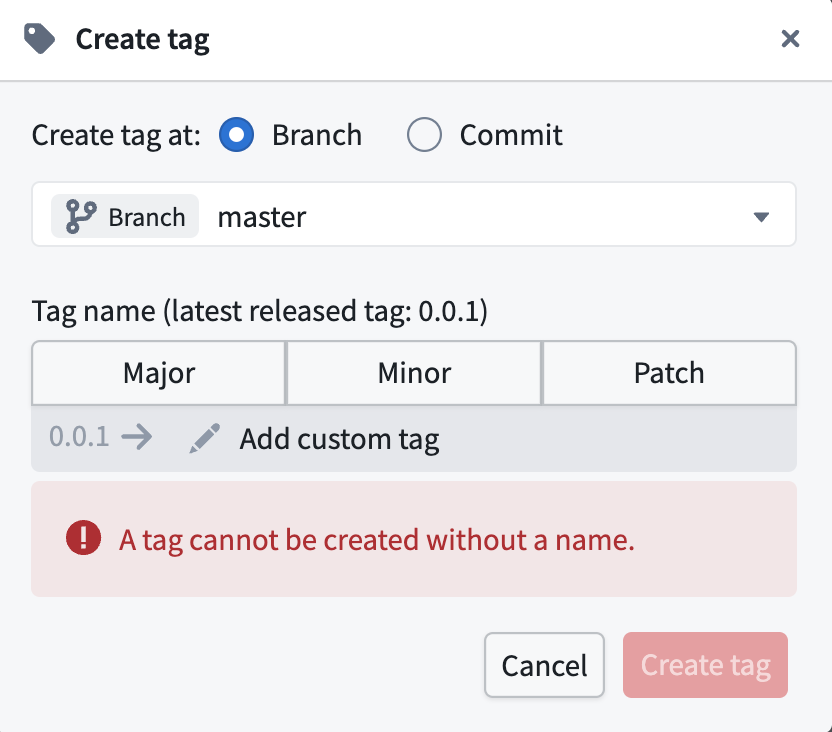
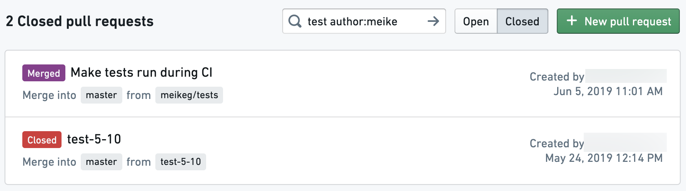
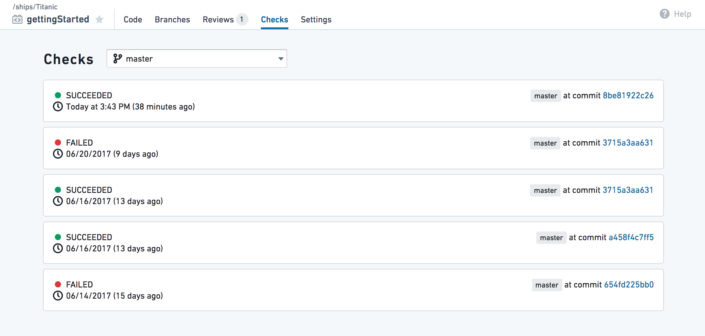
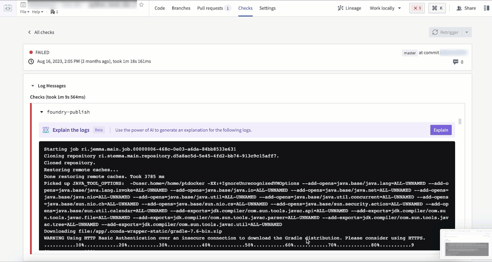

You can select the following tabs at the top of the Code Repositories interface:

In the Code tab, you can click the  button to start a step-by-step walkthrough that guides you through the core functionalities available in your Code Repository. The in-app help is currently only available in the Code view.
button to start a step-by-step walkthrough that guides you through the core functionalities available in your Code Repository. The in-app help is currently only available in the Code view.
To expose keyboard shortcuts via the command palette, use the F1 key in Windows or Fn+F1 on macOS:

Use the dropdown branch menu to select one of your existing sandbox branches to work in. Alternatively, click the  icon to create a new sandbox branch which contains a copy of the code on an existing branch. To edit code in your repository, you must work in a sandbox branch â protected branches cannot be directly edited.
icon to create a new sandbox branch which contains a copy of the code on an existing branch. To edit code in your repository, you must work in a sandbox branch â protected branches cannot be directly edited.
You can choose between a Code Repositories branch and, for supported repository types, a Global branch. Global branches are supported in Python Transforms and TypeScript v1 repositories, and can contain changes across multiple Palantir applications. Learn more about global branches.
Global branches must be based on the main branch of the repository, while Code Repositories branches can be based on any branch.

As you write and edit code in your repository, you can do the following:
 button to run the Transform on a sample of the input datasets. This is a quick way to preview your code changes on real data.
button to run the Transform on a sample of the input datasets. This is a quick way to preview your code changes on real data. button to run all unit tests defined in the current file. See Python Tests or Java Tests for information about how to add unit tests to your repository.
button to run all unit tests defined in the current file. See Python Tests or Java Tests for information about how to add unit tests to your repository. button to commit any changes in your sandbox branch. Once you commit changes, automatic checks run on your code.
button to commit any changes in your sandbox branch. Once you commit changes, automatic checks run on your code. button to build a new version of your output dataset after running automatic checks on your code. Clicking the button will trigger a build on all output datasets of the current file; if the current file does not generate any datasets, no build is triggered.
button to build a new version of your output dataset after running automatic checks on your code. Clicking the button will trigger a build on all output datasets of the current file; if the current file does not generate any datasets, no build is triggered. button to create a new Pull request containing your changes. This allows others to review and comment on your code before merging it into the main code.
button to create a new Pull request containing your changes. This allows others to review and comment on your code before merging it into the main code.Click the  icon to create a new file, folder, or sub-project. Select the âNew sub-projectâ option if you want to add another language-specific sub-project to your Code Repository.
icon to create a new file, folder, or sub-project. Select the âNew sub-projectâ option if you want to add another language-specific sub-project to your Code Repository.
Foundry Explorer Helper
The Foundry Explorer helper is a file navigation interface that lets you quickly browse all files and folders. Once you select a specific dataset, you can click âOpenâ to view the full dataset.
Problems Helper
The Problems helper tells you about any issues detected in your code. Click on a specific issue listed here to open up the problematic code.
Debugger Helper
The Debugger allows you to examine your transform behavior while it runs (see Debug Transforms).
Preview Helper
The Preview helper lets you run your code on a limited sample of the input datasets to quickly preview the code without committing your changes (see Preview Transforms).
Tests Helper
When your repository contains unit tests (see Python Tests and Java Tests), the Tests Helper lets you run those tests and displays their results.
File Changes Helper
The File Changes helper can be used to view any uncommitted changes to the current file, as well as compare previous versions of the file.
Build Helper
The Build helper lets you trigger dataset builds and view the progress for your builds. Once you select a dataset source file, you can click the build button to build a new version of your output dataset as well as run automatic checks on your code. You can then view the progress of the running tasks in the Build helper.
:::callout{theme="neutral"} Clicking the Build button at the top right corner of the Code Repositories interface is equivalent to triggering a build from the Build helper. :::
Docs Helper
The Docs helper contains references for the available languages that you can write code in. For more detailed language-specific documentation that is not available in the in-product documentation, refer to the supported languages.
SQL Scratchpad
The SQL helper lets you quickly test out SQL queries. Write a SQL query and click  to preview the results of your query. You can also test out an existing query you have written in your repository by selecting the appropriate
to preview the results of your query. You can also test out an existing query you have written in your repository by selecting the appropriate .sql file and clicking  .
.
To view queries marked as favorites, go to the  tab. To view a history of queries ran in the SQL helper, go to the
tab. To view a history of queries ran in the SQL helper, go to the  tab.
tab.
:::callout{theme="neutral"}
To access a specific branch of an input dataset in SQL Scratchpad, you prepend the name of the branch to the query: e.g. SELECT * FROM `branch_A`.`/path/to/dataset`. If no branch is specified it will default to master.
:::
The status bar provides information on the state of the environment and checks results. Information you can find in the status bar includes:
:::callout{theme="neutral"} This section summarizes how to create new branches and create new Pull requests in the Branches tab. These functionalities are also available in the Code tab. :::
In the Branches tab, you can see a list of branches existing in your Code Repository â this includes your own branches as well as other usersâ branches. Click the  button to create a new sandbox branch which contains a copy of the code on a specific branch.
button to create a new sandbox branch which contains a copy of the code on a specific branch.

Each listed branch contains a summary with the following available functionalities:
In the Tags tab, you can access a list of tags, which are like immutable branches. A tag can be used to mark a significant version of the code for future reference by giving it a version number or name. To create a new tag, select New tag. A tag can be created from the current version of a branch, or from any arbitrary commit.

:::callout{theme="neutral"}
To enforce that all tag names follow a specific naming convention, you can add a tagNameValidation configuration block to a file called repoSettings.json at the root of the repository, e.g.: "tagNameValidation": { "regex": "^(0|[1-9]\\d*)\\.(0|[1-9]\\d*)\\.(0|[1-9]\\d*)(-rc\\d+)?$", "errorMessage": "Tag name must have the format x.x.x or x.x.x-rcx." }
:::
For more information about the recommended git development workflow, refer to the Developer Best Practices.
:::callout{theme="neutral"} This section summarizes how to create new Pull requests in the Pull requests tab. This functionality is also available in the Code tab. :::
In the Pull requests tab, you can find information about Pull requests in your Code Repository. A Pull request lets users view a history of the changes on your branch and review your code on a line-by-line basis before merging your changes. Any time you want to merge the changes on your branch into the main code, you should create a new Pull request.
Click the  button to create a new Pull request. By default, the new Pull request created will merge your changes into the main branch of your repository (this is usually the master branch). Select which branch you want to base your new Pull request off of.
button to create a new Pull request. By default, the new Pull request created will merge your changes into the main branch of your repository (this is usually the master branch). Select which branch you want to base your new Pull request off of.
You can switch between a list of open and closed Pull requests by clicking the "Open" / "Closed" button at the top of the pull requests list, and use the search bar to further filter the list based on title or author.

Click on one of the Pull requests to review the proposed code changes line-by-line and add comments. Depending on the repository settings, each Pull request may require at least one approving review before they can be merged.
When reviewing changes to Transforms code, you can also check how these changes affect your datasets.
In the Checks tab, you can view a summary of running and completed checks on each branch. Use the dropdown branch menu to select a different branch. Click on a specific check to view more detailed information.

The Checks tab will also include the output of any unit tests that have been defined for your repo. You can define unit tests for Python and Java.
:::callout{theme="neutral"} If AIP is enabled on your stack, the error enhancer widget complements the detail view of a failed check to help you better understand and resolve issues that arise. :::

In the Settings tab, code authors can configure their personal editor preferences and repository administrators can control the repository's behavior and policies. To learn more about the Settings tab, see Administering Code Repositories.
:::callout{theme="neutral"} Most options in the Settings tab are aimed for administrators and will be available only to users with the appropriate permissions (by default, repository owners). :::